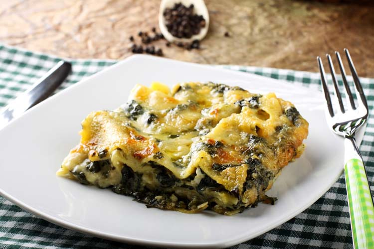

Recipe for a delicious lasagna

A vegetarian spinach lasganca (Source: Link Coosur )
Ingredients
- 500 gr of spinach
- 500 ml of cream
- 500 gr of cheese
- Two packages of lasagna pasta
- Olive oil
- 1 Onion
- Garlic
- Salt and pepper
Preparation
- Cook the spinach for 15 minutes in hot water and let it rest
- Fry the chopped onion and garlic in a hot pan with olive oil. Add salt and pepper.
- When the onion is fried (you are gonna see it becoming transparent) add the cooked spinach and wait for 10 minutes while moving it constantly.
- Add the crean to the pan, wait 5 minutes and let it rest.
- Put the lasagna pasta in hot water for 10 minutes.
- To layer the lasagna put a little bit of spinach cream in a ceramic bowl, then follow the sequence as many times as you can: lasagna pasta, spinach cream, cheese.
- When the bowl is almost full put a lot of cheese on top of the lasagna
- Put the lasagna in the oven for 30-45 minutes
- Let it rest for a little bit and enjoy!